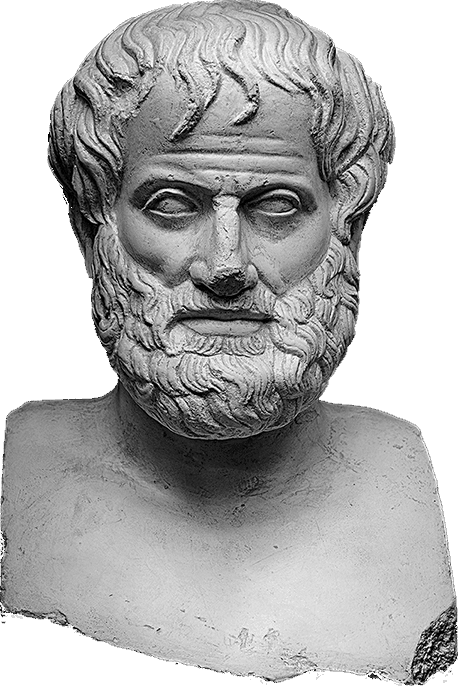

Аристотель
424/423 – 348/347 до н. э.

Детство и юность
Аристотель появился на свет в 384 г. до н.э. в городе Стагире, расположенном на севере Восточной Греции. В связи с местом своего рождения его часто называли – Стагиритом.
Философ рос и воспитывался в семье потомственного врача Никомаха и его супруги Фестиды.
Обучаться разным наукам Аристотель начал еще в раннем возрасте. Первым учителем мальчика был его отец, который за годы своей биографии написал 6 трудов по медицине и одну книгу по натурфилософии.
Никомах стремился дать сыну наилучшее образование. Кроме этого ему хотелось, чтобы Аристотель также стал медиком. Стоит заметить, что отец обучал мальчика не только точным наукам, но и философии, которая в то время пользовалась большой популярностью.
Родители Аристотеля умерли, когда он был еще подростком. В результате, воспитанием юноши занялся муж его старшей сестры по имени Проксен.
В 367 г. до н. э. Аристотель отправился в Афины. Там он увлекся учениями Платона, став впоследствии его учеником. В то время биографии любознательный парень интересовался не только философий, но и политикой, биологией, зоологией, физикой и другими науками. Стоит заметить, что в академии Платона он обучался на протяжении приблизительно 20 лет. После того, как у Аристотеля сформировались собственные взгляды на жизнь, он подверг критике идеи Платона относительно бестелесных сущностей всего сущего.
Философ развил свою теорию – первичности формы и материи, и неотделимости души от тела.
Позже Аристотель получил предложение от царя Филиппа 2 переехать в Македонию, чтобы воспитывать юного Александра. В итоге, он был учителем будущего полководца на протяжении 8 лет.
Когда Аристотель вернулся обратно в Афины, он открыл свою философскую школу «Ликей», более известную под названием перипатетической школы.
Философия Аристотеля
Основы философии
Аристотеля интересовали как основы мироустройства, так и вопросы сущности человеческой личности. Эти исследования он отражал в своих работах, дошедших до наших дней. Мыслитель много трудов посвятил искусству риторики — обучал красноречию.
Вплотную Аристотель начал изучать философию еще в 17 лет. В этом возрасте он поступил в Академию Платона, где обучался 20 лет. Впоследствии, основал собственную философскую школу в городе Пеле, которая получила название «Ликей» (прототип современного лицея), где преподавал до конца жизни.
Аристотель – автор работ, которые легли в основу современной философии. И самые известные из них — «Риторика», «Метафизика», «Политика», «Поэтика», «Органон».
Составляющие философии
Учение философа делится на 4 части:
- теорию — изучение проблем бытия и его граней, происхождения и сущности явлений
- практику — модель государственного устройства и деятельность людей
- поэтику — изучение средств художественного выражения в литературе
- логику — науку об истинном представлении окружающей действительности
В вопросах сущности бытия, Аристотель критиковал труды своего учителя, Платона. Он был противником однозначных теорий о мироустройстве, и считал, что каждая идея будет зависеть от обстановки в окружающем мире, а каждая вещь уникальна. Подробно остановимся на этих моментах.
Первоначала Аристотеля
- Материя — «то, из чего». Многообразие вещей, существующих объективно; материя вечна, несотворима и неуничтожима; она не может возникнуть из ничего, увеличиться или уменьшиться в своём количестве; она инертна и пассивна. Бесформенная материя представляет собой небытие. Первичнооформленная материя выражена в виде пяти первоэлементов (стихий): воздух, вода, земля, огонь и эфир (небесная субстанция).
- Форма — «то, что». Сущность, стимул, цель, а также причина становления многообразных вещей из однообразной материи. Создает формы разнообразных вещей из материи Бог (или ум-перводвигатель). Аристотель подходит к идее единичного бытия вещи, явления: оно представляет собою слияние материи и формы.
- Действующая причина ( начало ) — «то, откуда». Характеризует момент времени, с которого начинается существование вещи. Началом всех начал является Бог. Существует причинная зависимость явления сущего: есть действующая причина — это энергийная сила, порождающая нечто в покое универсального взаимодействия явлений сущего, не только материи и формы, акта и потенции, но и порождающей энергии-причины, имеющей наряду с действующим началом и целевой смысл.
- Цель — «то, ради чего». У каждой вещи есть своя частная цель. Высшей целью является Благо.
Бог
Бог — первопричина всего. Философ рассматривает мир в единой динамике вещей, связанных между собой причинно следственными связями. Если этот процесс целостный и взаимосвязанный, то можно найти первую причину всего, которой и является самообусловленный Бог. У Бога нет своей начальной причины, но Он дает начало и причину всему сущему. Он является умом, который мыслит самого себя, неподвижным первоначалом всего.
Бытие и познание
Бытие есть материя, которая имеет форму. Бесформенная материя — это небытие. Ощущениями мы познаем предметы, но их сущность мы познаем умом через понятия, которые позволяют выявить единую сущность изменчивых предметов. Философ ввел понятие категории. Все предметы мира можно разделить на категории, которые объединяют предметы с одинаковыми свойствами.
Небытия не существует. Вместо небытия Аристотель говорит о бытии (сущем) в возможности (в потенциале), которое может стать бытием в действительности.
Душа и человек
Аристотель считал, что каждый живой организм имеет нечто, руководящее им — душу. Они есть не только у людей, но и у растений, животных. Это то, что отличает живое от мертвого.
Согласно трактатам мыслителя, душа и тело не существуют друг без друга, поэтому, невозможно изучать одно и другое отдельно.
Мыслитель отличает души растений и животных от человеческой. Последняя — частица божественного разума, имеет более возвышенные функции, чем ответственность за пищеварение, размножение, передвижение и ощущения.
Душа направлена на достижение цели (Блага). Человек ощущает и размышляет именно душой. Душа в основе своей структуры имеет добродетель, которую человек достигает волевым сознательным усилием. Человек сам формирует свою душу. Аристотель вторит Платону, описывая три силы души: разумная, страстная и желающая.
Цель (сущность) пошлого человека — удовольствие. Более достойные стремятся к почету. Самой высокой целью является созерцание, т.к. оно не зависит ни от чего, кроме самого человека. Однако, Аристотелю чуждо бездеятельное созерцание, как ахимса у индусов. Счастливый человек — это добродетельный человек (совершающий благие поступки). Бездеятельный человек не может быть счастлив.
Добродетель - это некая золотая середина между крайностями. Между трусом и бесшабашным удальцом есть добродетельный человек, у которого осторожность и смелость находятся в правильном балансе.
Мыслитель выделяет два вида добродетели. Нравственная добродетель — это середина между переизбытком качества и отсутствием его. Например, нравственными добродетелями являются мужество, справедливость и умеренность. Этот вид добродетели приобретается выработкой привычек под действием нравов. Другой вид — умственная добродетель. Она приобретается в результате обучения.
Истинно счастливый человек не нуждается ни в чем, кроме созерцания. В этом Аристотель вторит учениям Индии (буддизм, йога и другие) и Китая (даосизм).
Жизнь человека есть череда ситуаций, в которых он делает правильный или неправильный выбор. Человек, который имеет только мнение о добродетели, может выбрать плохое действие. Человек, делающий правильный выбор, именно знает добродетель, т.к. ее практикует. Таким образом, философ описывает то, что потом в христианстве получит название целомудрия как единства знания, выражаемого мнения и действия. Если упрощенно, то целомудренный человек говорит, что думает, а делает то, что говорит.
Понятие метафизики
Суть метафизики Аристотеля — критика трудов Платона и его концепции о разделении мира идей и мира вещей. Ученый считает, что форма и материя неотделимы друг от друга. В материи заложено стремление воплотить в жизни те возможности, которые она заключает в себе.
Понятие «формы» по Аристотелю включает в себя три момента: сущность предмета «в настоящем времени», и потенциально возможные вещи, которые могут получиться из неё после – результат определенного создавшего её акта творчества.
Переход потенциальной возможности в существующую действительность – движение. В процессе движения, простые вещи превращаются во все более и более сложные. Постепенно, они приближаются к совершенству и к своему первоисточнику — Богу. Согласно этой концепции, Бог — это чистое мышление, которое не имеет выражения в вещественной форме. В дальнейшем, мышление просто не может развиваться – оно достигло совершенства, но Бог не существует отдельно от материального мира.
Понятие диалектики
Аристотель ясно видел, что далеко не всегда и не по всем вопросам знание сразу возникает как достоверное познание реальности. В ряде случаев и по ряду вопросов знание не может быть непререкаемым обладанием истиной, а есть лишь знание вероятное. Это знание предполагает свой, особый метод. Это не метод науки в точном смысле слова, а метод, приближающий к научному методу, подготовляющий его. Аристотель называет его «диалектикой». Для него «диалектика» - только исследование, а не доктринальное изложение непререкаемых истин. Предмет аристотелевской «диалектики» - не сама истина, не соответствие знания его предмету, а только отсутствие формального противоречия между терминами обсуждаемого вопроса, а также между положениями, высказанным участниками спора.
Ценность «диалектики», по Аристотелю, во-первых, в её способностях показать, каким образом должен исследоваться вопрос; для этого развиваются умозаключения, которые могли бы привести к ответу на поставленный вопрос и которые были вободны от противоречий. Во-вторых, «диалектика» даёт способ исследовать, что в ответах на поставленный вопрос может быть ложного.
В качестве специфических умозаключений, а именно не способных к обоснованию достоверных выводов, «диалектические» силлогизмы, как их называет Аристотель, основываются не на необходимых посылках, а на «мнениях, принятых на веру», иначе – на положениях, признанных в качестве вероятных авторитетными лицами. Единственная логическая сила, которой обладают «диалектические» силлогизмы, - их внутренняя непротиворечивость.
Государство
Государство естественная форма жизни общества. Люди объединяются в государства для счастливой жизни. Основой стабильности государства является большинство граждан, которые обладают средним достатком. Правители должны руководствоваться общим благом, тогда любая форма правления будет хорошей (монархия, аристократия, полития). Если правители преследуют свои частные цели не стремясь к общему благу, то любая форма правления будет плохой (тирания, олигархия, демократия). Наилучшая форма правления — полития, при которой большинство правит в общих интересах. Наибольшей частью общества в политии являются граждане со средним достатком.
Благо общества важнее блага индивида.
Аристотель о физике
По мнению ученого, материя возникает, исчезает и изменяется по законам движения, которое представляет собой бессмертную жизнь природы во времени и пространстве. Целью движения является постепенное расширение границ влияния формы над материей, и совершенствование жизни.
Ученый выделяет 4 основных вещества, из которых состоит Вселенная — огонь, воздух, вода и земля.
Философия Аристотеля четко разграничивает направления движения: вверх (к границе мира) и вниз (к центру Вселенной). Обусловлено это тем, что одни предметы (вода, земля) имеют тяжелый вес, а другие (огонь и воздух) легкие; из этого следует, что каждая из стихий двигается по-своему: воздух и огонь стремятся вверх,а вода и земля — вниз.
Вселенная, согласно философской мысли, имеет форму шара. Внутри нее по четко обозначенным окружностям движутся небесные тела, которые тоже имеют шарообразную форму. Граница Вселенной — это небо, которое представляет собой живое существо, и состоит из эфира.
Философ о природе
Аристотель в трудах говорил о том, что материя всегда будет стремиться к более совершенному состоянию. Так, предметы неорганического мира постепенно становятся органическими; растения в процессе эволюции преобразуются в предметы животного царства. Все в природе представляет собой частицы единого целого.
Постепенно, жизнь организмов становится все ярче и ярче, и достигает своего пика, воплотившись в человеке.
Аристотель об этике
Древнегреческий философ говорил о том, что суть добродетели состоит не в знании того, что есть добро и зло, потому что, наличие знания не способно удержать человека от совершения дурных поступков. Нужно сознательно тренировать в себе волю к совершению добрых поступков.
Добро — это преобладание разума над человеческими желаниями и страстями. Поведение человека можно назвать этическим, лишь тогда, когда он находит компромисс между своими желаниями и тем, как нужно поступить, согласно морально-этическим нормам. Не всегда человек хочет поступить правильно. Но усилием воли он должен контролировать свои действия. Поступив нравственно и справедливо, мы испытываем чувство довольства собой.
Нравственность неразрывно должна быть связана с государственностью и политикой.
Аристотель о политике
Высочайшей целью нравственной деятельности человека является создание государства. Согласно этой идее, ячейкой общества и государственности является отдельная семья. Супруги состоят между собой в союзе, который основан на нравственности. Руководит им мужчина, но женщина в семье тоже имеет свободу в своих действиях. Мужчина должен в большей степени иметь власть над детьми, чем над своей супругой.
Согласно Аристотелю, рабство — это нормальное явление. Каждый грек может иметь рабов из варварских племен. Ведь они — существа высшей природы. Рабы находятся в полном подчинении своего господина.
Несколько семей образуют общину. А когда общины соединяются между собой — появляется государство. Оно должно обеспечивать счастливую жизнь для каждого, стремиться делать граждан добродетельными. Государство должно стремиться к совершенному устройству жизни.
В своем трактате «Политика» ученый приводит несколько разновидностей форм государственного правления: монархия (государством правит одно лицо), аристократия (правят несколько человек) и демократия (источником власти является народ).
"Поэтика" Аристотеля
Многогранный Аристотель изучал также искусство драмы. Он написал отдельный трактат, посвященный этой отрасли — «Поэтика», который не дошел до нас целиком, но некоторые страницы этого труда, сохранились. Поэтому мы знаем, что думал великий философ о драматическом искусстве.
Ученый считал, что суть трагедии — пробуждать в зрителях сострадание и ужас. Благодаря таким сильным впечатлениям, человек испытывает «катарсис» — происходит его духовное очищение.
В пьесах Древней Греции всегда рассматривался определенный период времени. Философ в трактате «Поэтика» говорил о том, что время, место и действия в сюжете не должны расходиться с друг другом (теория «трех единств»).
Многие драматурги в своей работе опирались на учения Аристотеля. Позже, в «Новое время» в Европе не всегда стали придерживаться теории «трех единств», но она стала основой классического стиля в искусстве.
Личная жизнь
О личной жизни Аристотеля мы почти ничего не знаем. Известно, что за годы своей биографии он был дважды женат.
Первой супругой ученого была Пифиада, которая приходилась приемной дочерью тирану Ассосу из Троады. В этом браке родилась девочка Пифиада.
После смерти супруги, Аристотель незаконно взял себе в жены служанку Герпеллиду, которая родила ему сына Никомаха.
Мудрец был прямым и эмоциональным человеком, особенно, когда речь заходила о философии. Однажды он настолько серьезно поссорился с Платоном, не соглашаясь с его идеями, что тот начал избегать случайной встречи с учеником.
Смерть
После кончины Александра Великого в Афинах начинают все чаще возникать мятежи, направленные против македонского господства. В данный период биографии Аристотеля, как бывшего наставника полководца, многие обвиняли в безбожии.
Мыслителю пришлось покинуть Афины, дабы избежать печальной судьбы Сократа – отравленного ядом. Произнесенная им фраза «хочу избавить афинян от нового преступления против философии», получила впоследствии большую популярность.
Вскоре мудрец вместе с учениками отправляется на остров Эвбей. Спустя 2 месяца, в 322 г. до н.э., Аристотель умер от прогрессирующей болезни желудка. На тот момент ему было 62 года.
Основные труды
Покидая Афины, все свои работы Аристотель оставил ученику Теофрасту, от которого они перешли к ученику последнего — Нелею. Более ста лет труды Аристотеля пролежали в подземном хранилище. В I в. н.э. они попали в Рим, где были систематизиро¬ваны и изданы Андроником Родосским.
Сохранилось большое количество работ Аристотеля (хотя далеко не все) в самых разных областях знаний, но многие из них известны только в многократных переводах с одного языка на другой (с древне¬греческого — на сирийский, с сирийского — на арабский, с арабско¬го — на еврейский, с еврейского — на латынь, с латыни — на совре¬менные европейские языки).
Работы по философии были объединены в единую книгу, которая полу¬чила название «Метафизика» (букв. — «после физики»), так как в дан¬ном собрании сочинений она шла после книги под названием «Физика».
Относительно некоторых других работ существуют сомнения в ав¬торстве Аристотеля — возможно, они принадлежат его ученикам. Часть произведений Аристотеля написана совместно с его учениками, которые подбирали и систематизировали материалы для этих работ, например по истории греческих полисов (городов-государств), истории животного и растительного мира.
Галерея